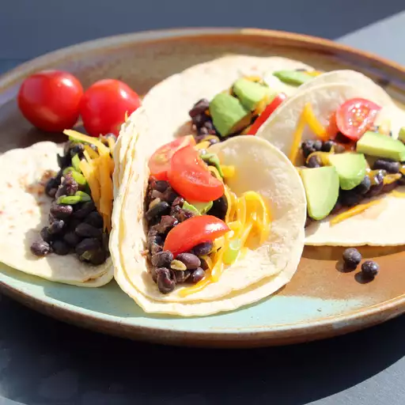

Black Bean Tacos

Description
Tangy black bean and salsa verde tacos take only minutes to make and are flavorful and delicious! Great vegetarian dish! Great by itself, but also wonderful with tomatoes, avocado, cheese, etc. Add any of your favorite taco toppings! Could also be served as a side dish with another meal.
Ingredients
- 1 tablespoon olive oil
- 1 small onion, chopped
- 1 (15 ounce) can black beans, rinsed and drained
- 1 (7 ounce) can green salsa (salsa verde)
- ½ teaspoon garlic powder
- ½ teaspoon chili powder
- ½ teaspoon ground cumin
- 6 taco shells (Optional)
- 2 ounces shredded Mexican cheese blend (Optional)
- 1 tomato, diced (Optional)
- 1 avocado, sliced (Optional)
- 1 cup shredded lettuce (Optional)
Directions
- Heat olive oil in a saucepan over medium-low heat; cook onion in hot oil until tender, about 5 minutes. Stir black beans, green salsa, garlic powder, chili powder, and cumin with the onion. Reduce heat to low and cook the mixture at a simmer until it thickens, 5 to 10 minutes.
- Serve with taco shells, Mexican cheese blend, tomato, avocado, and shredded lettuce.